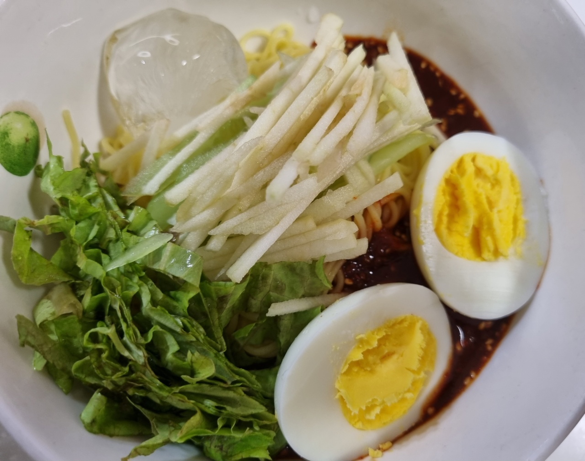

비빔국수

- 재료
소면 4인분, 깻잎 6장, 고추장 3T, 고춧가루 3T, 식초 6T, 설탕 4.5T, 다진마늘 1.5T, 양조간장 3T
와사비 1.5t, 참기름 2T, 참깨 톡톡, 소금 톡톡, 계란 4개
- 조리순서
- 고추장 3T, 고춧가루 3T, 식초 6T, 설탕 4.5T, 다진마늘 1.5T, 양조간장 3T
와사비 1.5t, 참기름 2T를 섞어서 양념을 만듭니다.
깻잎은 흐르는 물에 씻고 먹기 편하게 잘라둡니다.
- 냄비에 물을 넣고 소금을 약간 뿌려서 15분간 계란을 삶습니다.
익은 계란은 찬물에 넣어 식힌 후 껍질을 까면 잘 벗겨집니다.
- 끓는 물에 소금을 약간 넣고 4분간 소면을 삶은 후 찬물에 여러번 행궈서 체에 받쳐 물기를 뺍니다.
물이 끓어오를 때 찬물을 조금씩 부워주면 면발이 더 쫄깃해집니다.
- 소면을 그릇에 담고 양념을 얹습니다.
그 위에 깻잎과 반으로 자른 계란을 올리고 참깨를 톡톡 뿌려줍니다.